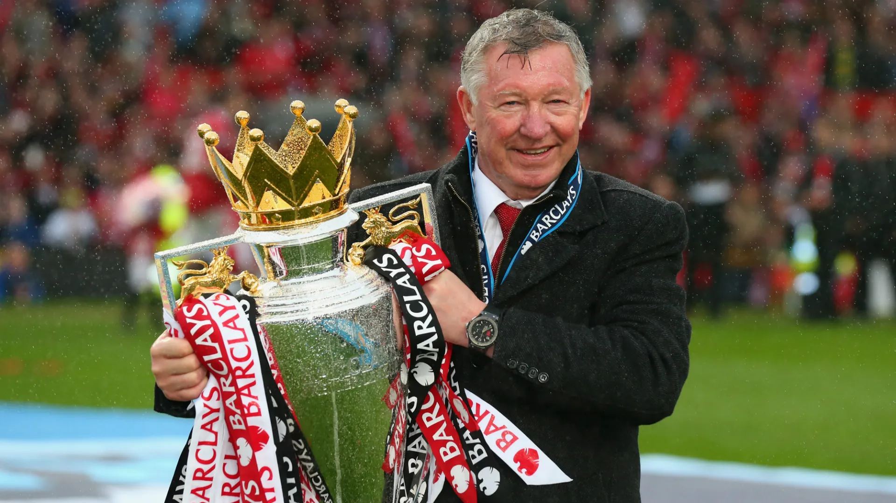
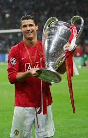
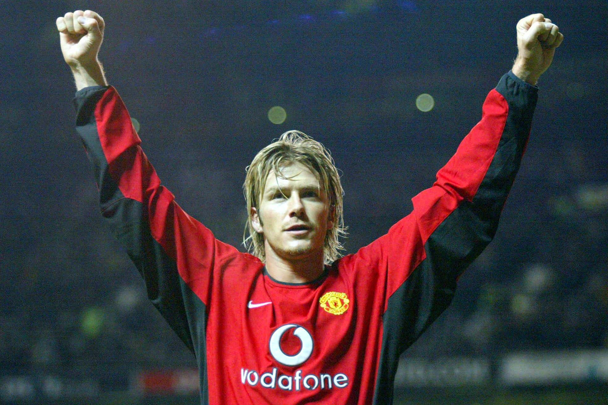

Manchester United Legends
Sir Alex Ferguson

Sir Alex Ferguson is the most successful manager in Manchester United history. He led the club from 1986 to 2013 and helped build one of the greatest eras in football. Under his leadership, Manchester United won 13 Premier League titles, 2 UEFA Champions League titles, and many domestic cups.
Wayne Rooney

Wayne Rooney is Manchester United’s all-time leading goal scorer. He joined the club in 2004 and became known for his goals, hard work, and leadership. Rooney helped United win multiple league titles and the Champions League.
Cristiano Ronaldo

Cristiano Ronaldo developed into one of the greatest footballers in the world during his time at Manchester United. He played an important role in the club’s success and won major trophies, including the Champions League.
David Beckham

David Beckham was famous for his passing, crossing, and free kicks. He was part of Manchester United’s famous treble-winning team in 1999 and remains one of the club’s most iconic figures.